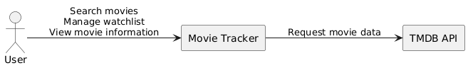

3 - Context and Scope
3.1 Business context

3.2 Technical context
Component/Element |
Description/Responsability |
|---|---|
Web Browser |
User interface access through HTTPS |
Traefik |
Reverse proxy and request routing |
TanStack/React |
Frontend user interface and client-side interactions |
Python Backend |
Business logic, authentication, API integration, watchlist management |
SQLite Database |
Persistent storage for users related topics(rating movies and reviews) and watchlists |
TMDB API |
External provider of movie information |
Docker |
Containerization and deployment platform |